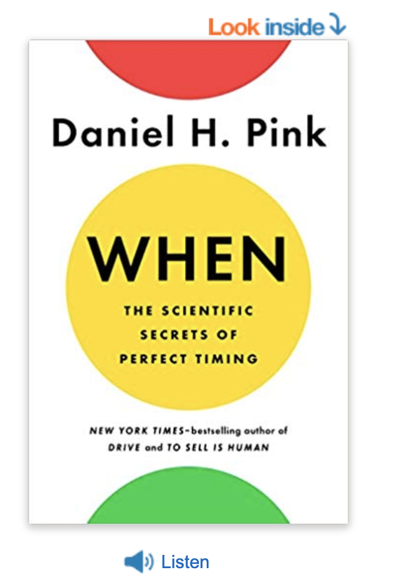
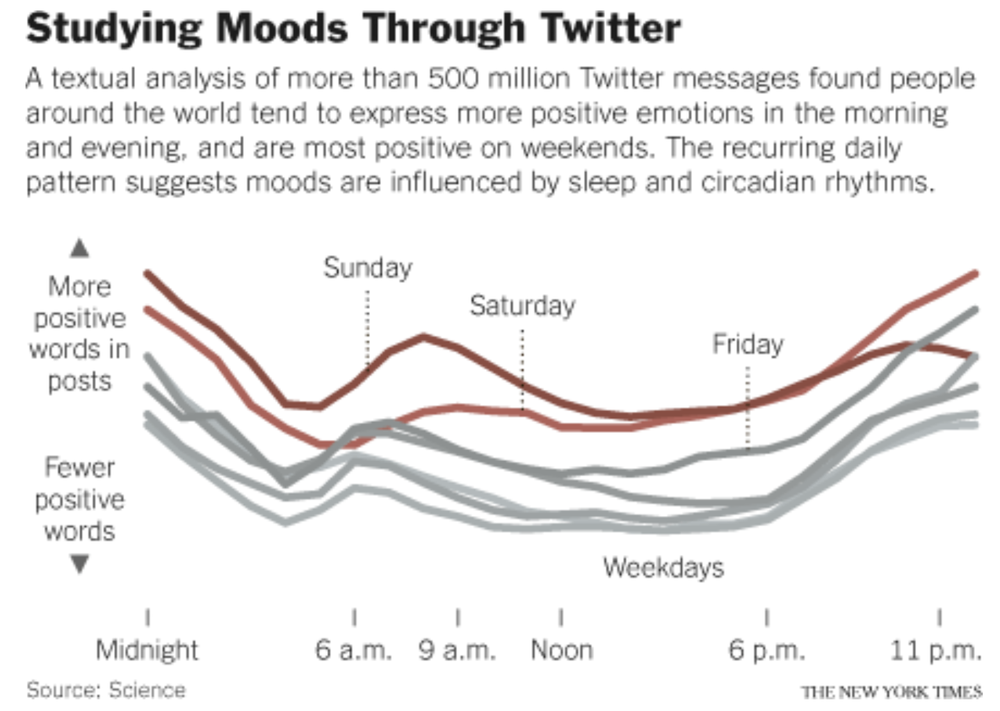

[啟發] 量化科學的一日之計 | An hour in the morning is worth two in the evening
Status: Published Medium
常言道：一日之計在於晨
世界上很多道理，你一聽覺得它肯定對，那你為什麼不去執行呢？可能是你還未察覺到他的重要性，一日之計在於晨，說得是學習和工作一定要抓緊早上的時光。可是早上覺得有精神到底是一種感覺呢，還是真有什麼明顯的影響呢？
光有知道這個道理是不行的，我們還需要知道這個道理重要程度，是不是真值得我們調整做事的優先級別，因此你需要有實證有量化分析，這就是
科學方法 和傳統智慧的差別
本文是讀完<得到>app | 萬維鋼老師的 | <見機> 這門課心得，課堂參考2018出版的<見機：完美的科學秘密> (When The Scientific Secrets of Perfect Timing)內容，作者透過大量數據來解釋人們如何使用的時間，並提醒人們使用時間才有效率

https://www.books.com.tw/products/F014128997
一日之中的高低潮
下圖是紐約時報的報導，X軸是一天之中的時刻，Y軸代表的是情緒，總得來說人們在週未的情緒普遍上較好，另外一個觀察是不論是那一天，情緒變化的曲線型狀都非常相似
早上起來七八點鐘是情緒的高峰，這時候大家說話比較正面，之後人們的情緒變化會慢慢變低落，到下午五點左右達到最低潮(等下班)。而晚上，人們的情緒又開始回升，到了午夜又達到一個高峰，您不妨可以檢視自已是有吻合這樣的情緒浮動

https://stoweboyd.com/post/10862664306/moods-on-twitter-follow-biological-rhythms-study
研究指出：情緒變化三個時段
人的下丘腦之中有個視交叉核，負責整個不同時段的荷爾蒙分佈，其實這就是我們的生理時鐘。而情緒，顯然是受到時生理時鐘的影響。
總結來說，我們可以把一天的之中的情緒變化分為三段：
上午達到高峰，下午經歷低潮，晚上出現反彈
集中精神的時機點
大腦有二種思維模式：一種是集中思維，需要你嚴格按照規則執行，比如說做數學題。集中思維要求大腦處於機靈的狀態，集中注意力。另一種是發散思維，適合創造性的活動，注意力不集，混亂一點反而更好。若依照上面的統計結果：你最好在上午從事集中思維，下午從事發散思維。
「專注模式」和「發散模式」 https://www.thenewslens.com/article/88323
粹鍊過的大數據結論
相信或不相信科學結果是主觀的決定。但你都不知道的生理反應，數據則會說話。會有人說，難到我早上自已起來精力好不好，什麼時候適合做什麼自已還不知道嗎？為什麼要聽研究報告說的話？
你可能真的不知道，但你肯定有個印象，你沒做過量化分析，也許你感覺上午精力更好，但是你不知道有多少，你不知道值不值得為此改變作習，改變工作安排
量化應用在運動
現在很流行的量化自我的運動，誰誰誰每天跑了幾公里，把距離分享到社交網路，還要和朋友比較一驟。但社交可不是量化自我的真正的本義，量化自我是一種科學的方法，它的真正目的是為了了解自已、研究自已、對自已做出更好的安排
高手善於觀察自已
科學的價值是什麼。別人是用分析了四億條twitter和26000個con-call才得出這些結論，而且給你提供了一個度。有這個度(量)，我們才談得上是科學決策
量化分析是高手必備的能力。你到底是白天雲雀還是夜間貓頭鷹？自已做個量化分析，看看你在一天中的高峰，低潮和反彈期到底是在什麼時候，並好好的利你的有限時間吧
不管心情怎麼變化，都要認識、掌握自已 photo by medium.com
結論
人的情緒和認知能力在一天之中有明顯的變化，可以分為高峰、低潮和反彈三個時段。你必須
了解自已的這三個時間都在什麼候，對各種任務給予合理的安排
參考：
- <得到>app | 萬維鋼老師 | <見機>
- Moods on Twitter Follow Biological Rhythms, Study Find - NYTimes.com
- 《深度學習的技術》：從「專注模式」切換到「發散模式」